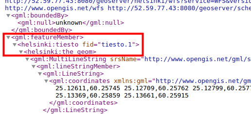
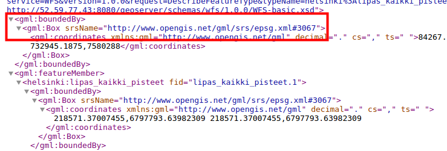
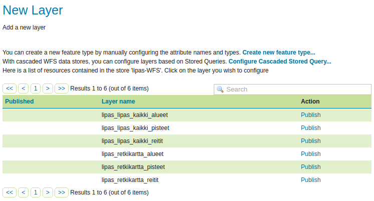
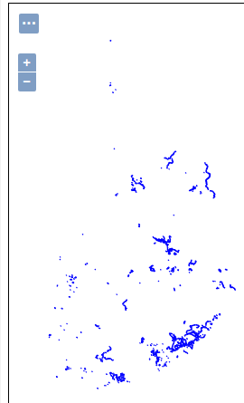

9 EXERCISE 2.1: WFS SERVICES
Content of the exercise
The exercise will introduce you to the settings and functionality of the WFS map services.
Aim of the exercise
After the exercise, the student will be able to change the publishing settings of the WFS map services and use the WFS-T map service.
Estimated duration
30 minutes.
9.1 Preparation
Stores with vector data have been added to GeoServer.
9.2 OGC-standards
Previously, the configuration of the WMS and WCS interface services defined by the Open Geospatial Consortium (OGC) was examined. The Web Feature Service (WFS) download service is also an interface service defined by the OGC through which vector data and their feature information can be downloaded for further exploitation.
9.3 WFS settings
WFS services allow vector data, their geometry and attributes to be processed over the network.
Open Services → WFS. Right at the beginning of the view, you will find the general information about the service (Service Metadata).
The WFS-specific settings can be found below, which define how WFS-specific service requests are handled and responded to.
9.4 Number of data requested
Maximum number of features and Maximum number of features for preview will prevent the download of too much data. If a download request contains a large number of features, only a subset of them will be downloaded.
To test this function, set the value of these features to 1.
Then press Submit.
Then view the tiesto layer through the WFS interface via the Layer Preview GML preview or e.g. with the QGIS application.
How have the attributes you have just identified influenced the final result? Why?
Preview the same tiesto layer now using the GML link.


The service response (in xml format) now contains only one geometry, as we had specified in the settings.
Return to the Services → WFS view and check Return bounding box with every feature. Preview the same layer again and compare it with the result of the previous service request. For certain applications, it may be necessary to obtain information about the bounding box for each spatial feature.
Check in the tiesto-layer GML preview that the response sent by GeoServer now also includes the rectangle delimiting the geometries.

Go back to Services → WFS view and reset the defaults to Maximum number of features: 1 000 000 and Maximum number of features for preview: 50.
Press Submit.
You can still check that now the GML preview only shows the geometries of 50 features, although there are many more spatial features at the tiesto-layer.
Psst! “Maximum number of features for preview” is an important setting to limit the number of WFS request results in layer preview mode. It is easy to get your computer stuck if all the layer information comes in response at once.
9.5 Specifying several coordinate systems
GeoServer is able to project and serve data in any of the more than 5000 supported coordinate systems. However, it should be noted that the systems used by the server must be manually specified, rather than having all 5000+ coordinate systems declared via a GetCapabilities request.
Psst! This setting only affects the content of the GetCapabilities request; projection is still possible using any client system (e.g. geospatial software).
Specify the coordinate systems used in the Extra SRS codes for WFS capabilities generation field, separated by commas: 4326, 3047, 3067.
Which coordinate systems are involved?
You can now check that the above coordinate systems are specified in the WFS functionality document.
Click on the GeoServer logo in the top left corner (returning to the home page of the web interface) and then select WFS → 1.1.0 or 2.0.0 from the right side of the page.
By searching “EPSG” you can find the EPSG codes in the WFS service documentation (in xm format):
Note that this setting does not work for WFS 1.0.0, which only reports EPSG codes per layer.

9.6 Service Levels
In GeoServer, vector data can be published for editing using WFS-T (Transactional).
The Service Level options define the service level provided by WFS.
Basic |
Provides basic functionality: GetCapabilities, DescribeFeatureType and GetFeature | |
Transactional |
(WFS-T), in addition to the basic functionality, a transactional function is available |
Complete |
Add LockFeature support, which prevents editing of spatial objects (features) after another user has already started editing them | |
Leave the setting at Complete. By default, GeoServer only allows users in the admin group to edit data, and unauthenticated users cannot edit data. The Basic level can be used to completely prevent editing of data by WFS-T.
9.7 GML settings
GML is a language based on XML, defined by the OGC. GML is used to model geometry elements. GeoServer produces vector data in GML format.
Different versions of the WFS service return different GML formats by default:
WFS 1.0.0 |
GML 2 |
WFS 1.1.0 |
GML 3 |
WFS 2.0.0 |
GML 3.2 |
For each GML format, it is possible to define a coordinate system format that must be taken into account in the GML result. This is particularly important when developing applications using WFS services.
EPSG CODES AND COORDINATE FORMATS IN GML DOCUMENT
| EPSG Code | srsName=“EPSG:4326” | | Coordinates in the format: longitude/latitude (x/y) |
| OGC HTTP URL | srsName=“http://www.opengis.net/gml/srs/epsg.xml#4326” | | Coordinates in the format: longitude/latitude (x/y) |
| OGC Experimental URN | srsName=“urn:x-ogc:def:crs:EPSG:4326” |
| OGC URN | srsName=“urn:ogc:def:crs:EPSG::4326” | | Coordinates in the format: latitude/longitude (y/x) |
| OGC HTTP URI | srsName=“http://www.opengis.net/def/crs/EPSG/0/4326” |
For example, the Lipas areas layer from a GML2 preview (EPSG code in the form of an OGC HTTP URL):

9.8 Workspace specific settings
As with WMS services, it is also possible to configure WFS settings on a workspace-by-workspace basis. For example, WFS-T functionality can be enabled only through a single workspace and access control can be used to allow only identified users to edit data.
Open Data → Workspaces and then select the helsinki workspace. Then check Services → WFS and then click on the WFS link.

Make sure that Service Level is set to Complete.

Then press Submit (at the bottom of the page).
Finally, press Save at the bottom of the page.
Workspace-specific settings can be used, for example, to limit coordinate systems in which the workspace data is available, or to remove the WFS-T service from the data of a specific workspace.
9.9 Editing via WFS-T service
One important feature of WFS services is the ability to edit vector data directly on the server. The WFS-T service can also be configured with a locking option (Complete service level), which is necessary when editing on shared data.
Editing can be done using different client software, e.g. QGIS or web applications.
The easiest way to test the editing functionality is to use the QGIS spatial data system.
First you need the address of the WFS service. For example, you can get this from the GeoServer home page, which you can access by clicking on the GeoServer logo in the top left corner. Right-click on the link 1.1.0 under the WFS section of the Service Capabilities panel on the home page.
The address will be in the format:
With GeoServer’s default settings, a workspace-specific address is obtained by adding the workspace URI to the address. For example, the address of a helsinki workspace would be:
Open QGIS from the desktop icon. Add a new WFS service and paste the address you just copied into the URL field. Also enter your username (admin) and password (gispo).

If necessary, follow the trainer’s instructions for using QGIS. Connect QGIS to your WFS map service, add the lipas_all_routes layer you added earlier in the second exercise to the map project. Edit some spatial data objects and save the changes.
Afterwards, look at the GeoServer preview of the objects you edited and verify that the changes have indeed been saved to the server. ## Muiden WFS-palvelujen hyödyntäminen (cascading WFS)
In the same way that it is possible to continue publishing WMS services (cascading WMS), GeoServer can also continue publishing WFS services (cascading WFS).
To add a new store (Data → Stores → Add new Store), select Web Feature Server (NG) from the list.

The Lipas-WFS service will be added. Name the new vector-store lipas_WFS and set WFS GetCapabilities URL:

The rest of the settings can be left at default values. Then press Save.
The new store will contain the map layers that were shared on the original WFS server:

You can publish layers directly from the service. For example, publish lipas_excursion_map_routes. Right click on Publish and define Bounding Boxes as usual.
Then press Save.
You can now preview the new layer (the default name will be Excursion_routes).

Psst! If the data is large and the maximum download time is set low, GeoServer may generate an error code when the data cannot be loaded by the specified time. Change this time if the data is large.